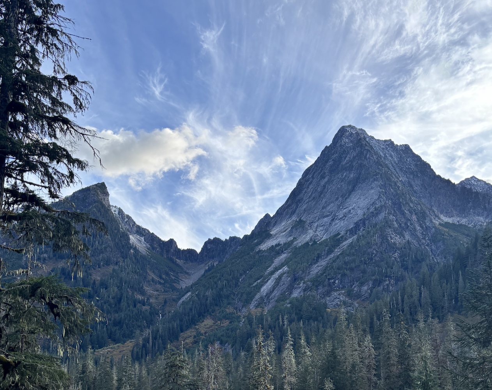
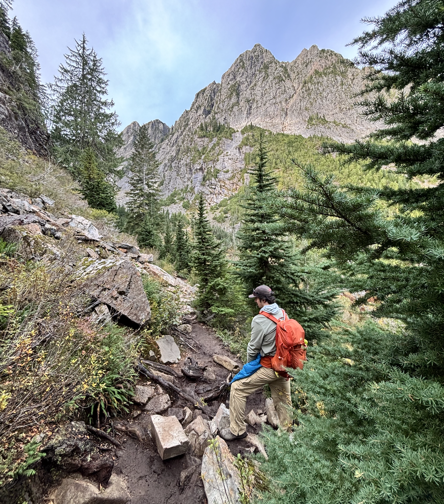
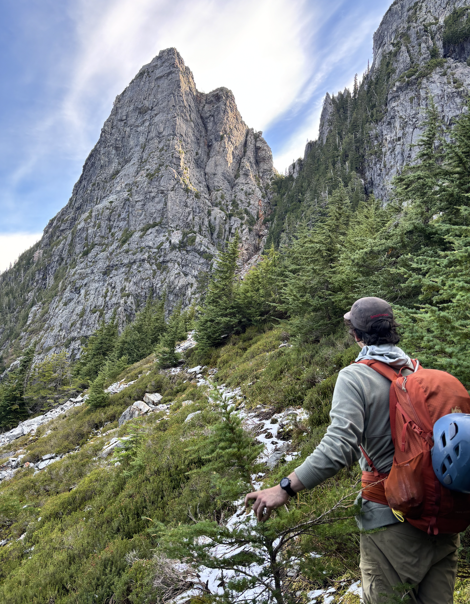
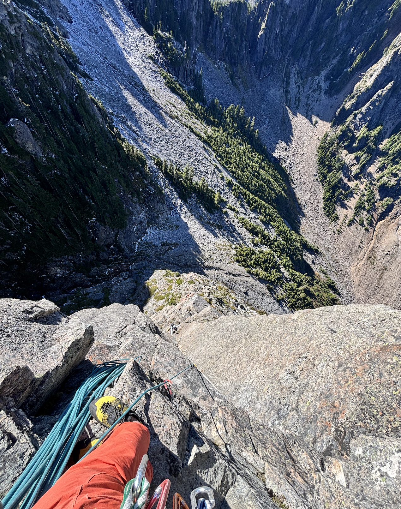
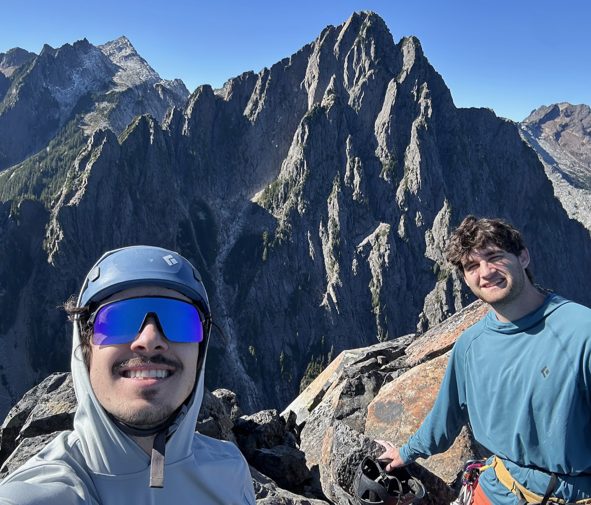
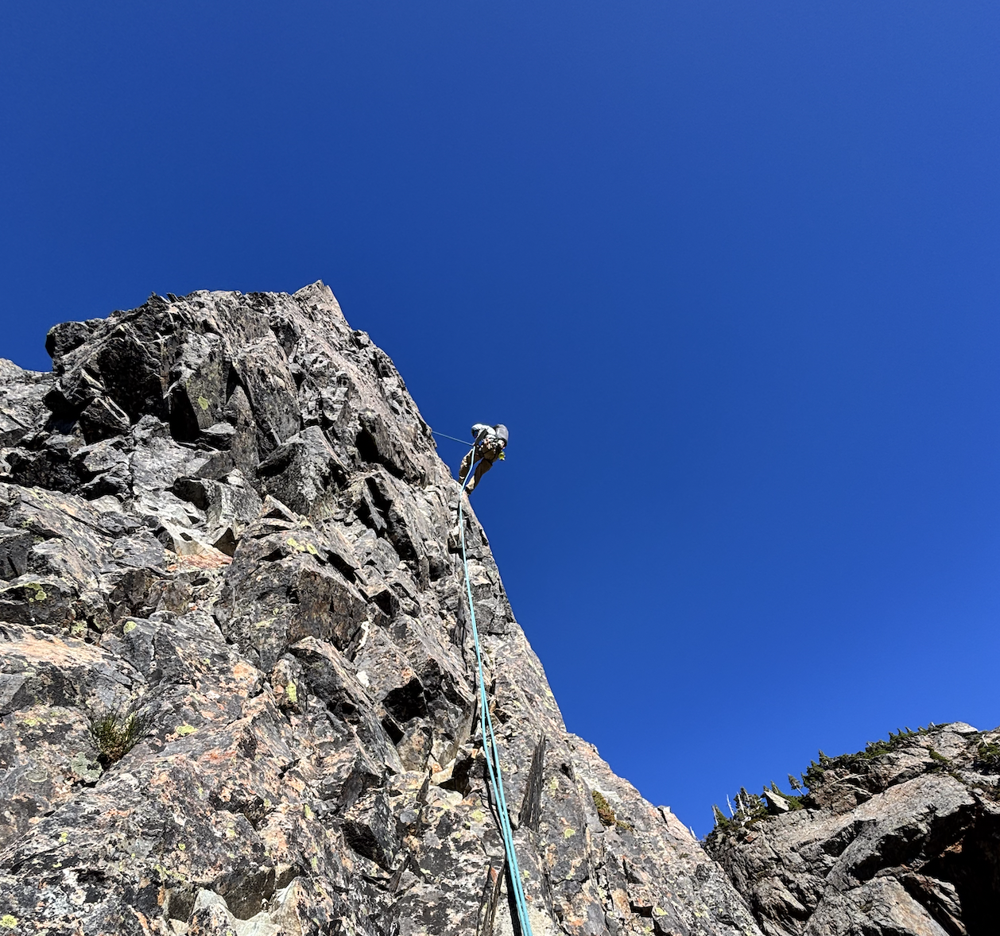

September 27, 2026
Morning Star Peak, WA
5.10a, 7p S, Flash, ****
Emmett and I headed up to the vesper peak wilderness area after some major rainfall and cold temps. I was under the impression alpine season was over but down to push for one more big day. Driving in the night before, we noticed alot of water on the ground and freezing temps seemed a bit ominous. We parked on a turnout surrounded by thousands of feet of untouched slab towers rising out of the forest. Emmett made some kind of cajun sausage that was insanely good or I was just hungry. We decided to sleep in the back of the 4runner.

That was a horrible decision, as a car pulled up right behind us and left their lights on all night. After we made peace with the added light, a helicopter pulled up to the trailhead and decided to hover for about 30 minutes before leaving to recover someone (we thought it might be SAR based on vesper peak's record). Eventually it returned a few times and I think I might have gotten a few hours sleep before morning came.
Without much sleep we headed off on a long and wet hike. The forest valley was beautiful but filled with unfortunate rivers to cross. This section felt pretty long on the way back (in the dark). We climbed a few thousand feet up muddy switchbacks until reaching a cirque from which we could see the opposite face of morning star. At the base it was a little tough believing it was only 7 pitches to the top. We ran into a group of kids hiking asking us for directions who seemed a bit lost and wanted to follow us for a bit. Eventually, we made it to some light snow (another bad omen) and the base of the route after some light scrambling. By this point I was already tired and a bit cold, but just looking at the wall ahead had me beyond psyched.


The first pitch featured a finger lock side pull move that almost instantly numbed my hand from the cold, but other than that the first few pitches were mostly uneventful while beautiful. Making it to the dihedral pitches started some incredible climbing. I led pitch 5 which was probably some of the best climbing I've done in the alpine. It was a long, aesthetic pitch of stemming punctuated by an awesome airy roof-- could not have asked for better. The final pitch was some pretty sketchy choss, to the extent I was afraid of torquing down on a foot jam for fear of knocking a fridge sized block loose on Emmett. The summit had some beautiful views of the surrounding peaks, and Emmett and I added our names to a long, humorous list in the summit register.


After seemingly endless raps, we downscrambled a bit to the trail and started a long and slippery descent to the car.
